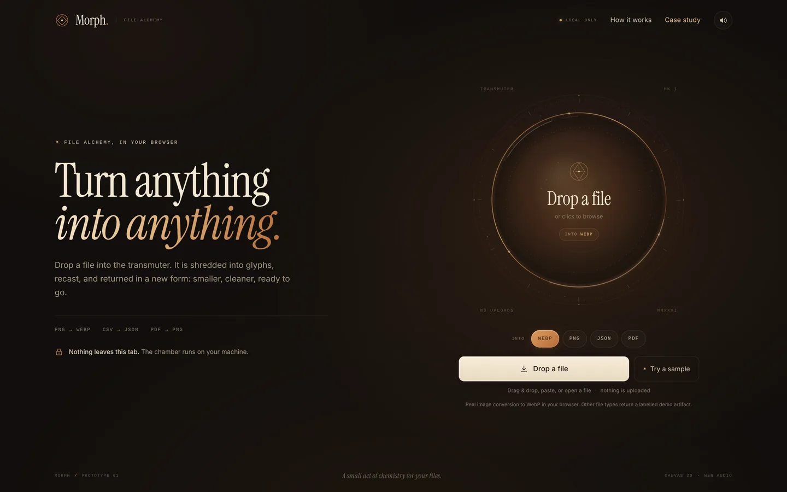
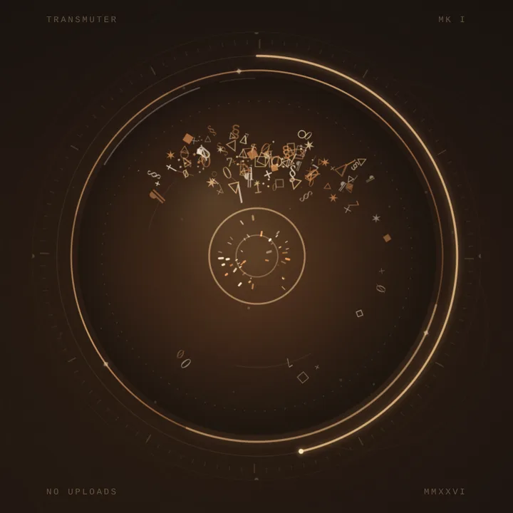
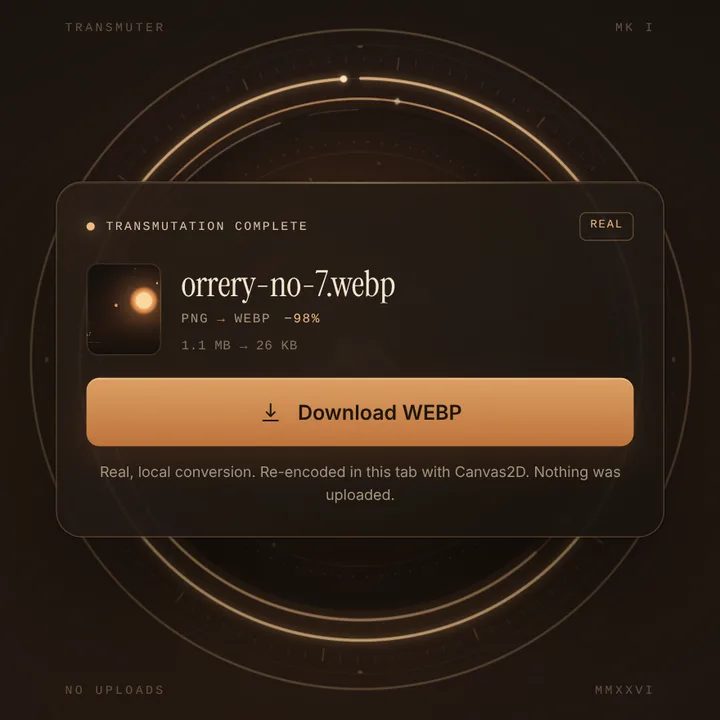
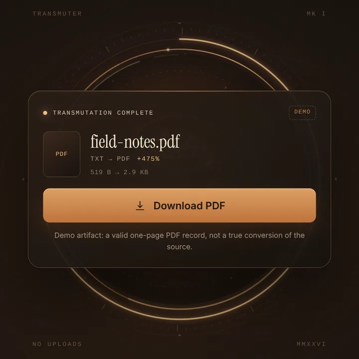
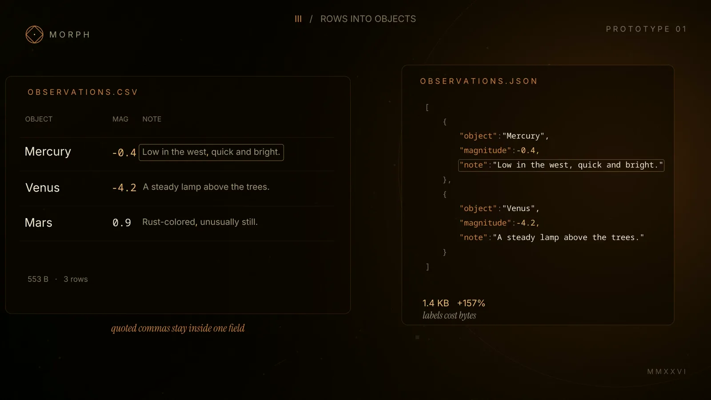
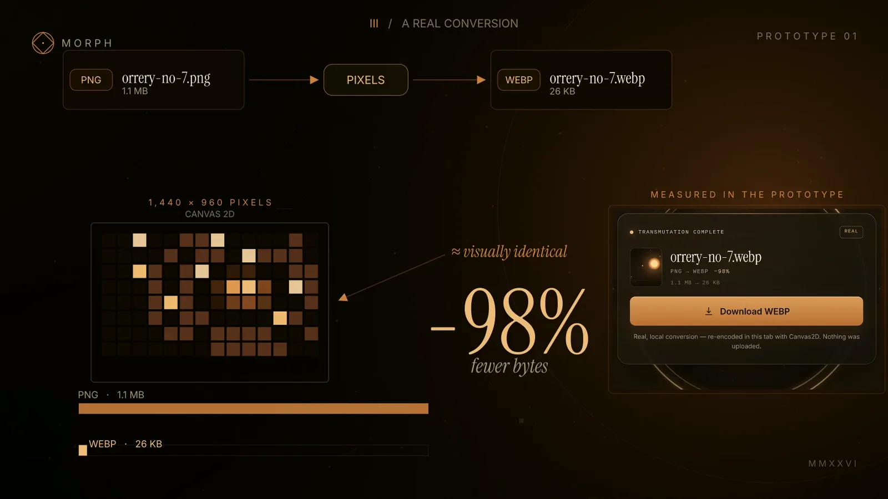
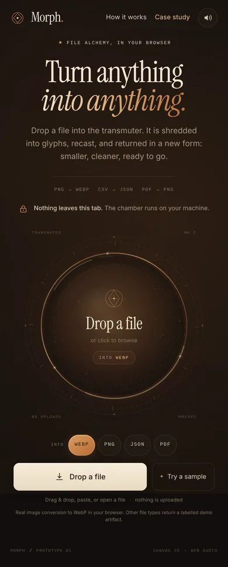

File alchemy / Case study
Nothing leaves.
Everything changes.
Morph is a file converter built around one interaction: drop a file into a brass chamber, watch it shred into glyphs, and collect another format from the other side. The conversion runs in the tab, and the result tells you whether it was real or a labelled demo.
- Role
- Product design and frontend
- Stack
- TypeScript, Vite, Canvas 2D
- Runtime
- Browser only, no server
- Status
- Prototype 01, November 2026

The problem
File conversion is a trust exercise in a windowless room.
Most online converters ask you to hand over a private file before they show you anything. The upload, the queue, and the download are opaque by design. Even when the result is correct, you cannot see the work.
The web already has the translators: image decoders, Canvas2D encoders, the JSON parser, and file readers. A converter can run in the tab. What is missing is a reason to believe it did. Morph treats the conversion itself as the interface, not a progress bar bolted to a form.
A converter and a magic trick
Both can turn a PNG into a WebP. Only one lets you inspect the boundary.
| Criterion | A typical converter | Morph |
|---|---|---|
| Where the file goes | Uploaded to a server you cannot see. | Stays in the tab. Nothing is sent. |
| What you watch | A queue, a spinner, a percentage. | Glyphs, a forge, a pulse, then the file. |
| What a result means | Presented as a success by default. | Marked REAL or DEMO, with a note that says why. |
| What you can check | The service's word. | Canvas2D, a parser, and Web Audio in the page. |
| What it asks of you | An account, an upload, a wait. | One file, up to 60 MB, no account. |
The comparison is not really about features. It is about where the trust sits. Morph moves it into the tab, where the file already is, and then shows the work so the claim is not only a promise.
The machine
A converter you can watch think.
The chamber has four states, and each one is tied to the conversion rather than to a timer pretending to be one.
Idle is a brass ring with dust and a slow orbit. Ingest pulls the file card apart into up to 155 glyphs. Forge tightens the vortex and warms the ring. Complete sends a pulse through the glass, the result panel drops in, and a small bell lands. The card is real DOM, not a canvas drawing of a result.


The animation is not a wrapper around the product. It is the product demo.
The interface gets out of the way when it should. Formats are disabled while the chamber is working. The result panel takes focus. Changing the target after a result requires Convert another, so the screen never shows a result for a setting that is no longer active.
Reading the result
REAL The content was converted in the tab: an image re-encoded, a table parsed, or JSON reformatted.
DEMO The file is valid, but it is a transmutation record, a metadata sheet, or a seal image. It is never presented as a successful content conversion.

The film
Two minutes and twenty-eight seconds to explain the trick.
Morph has a real explainer, not a screen recording with a voiceover. It was built in Manim, narrated, scored, and cut around the prototype's own output. The argument is the same one the interface makes: a file is not a thing. It is a sequence of bytes, and a format is an agreement about how to read them.
The film follows one PNG through the chamber, then a CSV, then the honest demo case. The 1.1 MB to 26 KB and 553 B to 1.4 KB figures are runs from the live build. They are single measured samples, not a benchmark.
Nine beats
-
0:00
A file feels like a thing.
-
0:22
Decode one agreement, hold the meaning, encode the next.
-
0:33
PNG and WebP agree on pixels. CSV and JSON agree on rows.
-
0:54
A real PNG becomes WebP: 1.1 MB to 26 KB.
-
1:14
A real CSV becomes JSON, with keys and typed values.
-
1:31
PDF is a labelled demo, not a fake success.
-
1:40
The browser already carries the translators.
-
1:52
Nothing leaves the tab.
-
2:10
A file was never the thing. It was the agreement.
How it works
The browser already has the translators. Morph conducts them.
There is no server, no framework, and no runtime dependency beyond the browser APIs. The whole product is a state machine, three conversion paths, one canvas loop, and a small synthesizer.
-
Images go through Canvas2D.
createImageBitmapdecodes the file, with an<img>fallback for formats it cannot read. The bitmap is drawn to a canvas and encoded again withtoBlobat WebP quality 0.9. Original dimensions are preserved up to a 7000 px side or 45 MP. -
Tables go through a small parser.
Delimiter detection, quote-aware parsing, duplicate headers suffixed, and numbers and booleans typed. CSV and TSV become JSON objects with real keys.
-
JSON is parsed and reindented.
The built-in parser reads the file, then writes it back with two-space indentation. No server, no schema, no surprise fields.
-
Everything else gets a receipt.
PDF is a generated one-page record. JSON from an arbitrary file is a metadata sheet. An image target from an unsupported source is a rendered seal. All valid files, all marked DEMO.

What happens to each route
| Route | Badge | What happens |
|---|---|---|
| PNG, JPG, WebP, GIF, AVIF, SVG to WebP or PNG | REAL | Decoded, drawn to Canvas2D, and re-encoded in the tab. |
| CSV or TSV to JSON | REAL | Parsed, headers deduplicated, cells typed as numbers, booleans, or strings. |
| JSON to JSON | REAL | Parsed and reindented with two spaces. |
| Any file to PDF | DEMO | A one-page transmutation record, not a rendering of the source. |
| An unsupported pair to JSON or an image | DEMO | A metadata sheet or a seal image, clearly labelled. |
The boundary is data
export type ConversionKind = "real" | "demo";
return {
blob,
filename,
kind: "real",
note: "Real, local conversion. Re-encoded in this tab with Canvas2D. Nothing was uploaded.",
};The kind drives the badge, the note, the accessible announcement, and the download's accessible label. It is not a label added after the fact. A demo path returns a valid file with the same pipeline, and the interface refuses to call it a conversion.
Performance
One loop, and only while you are looking.
The chamber is one Canvas2D context and one
requestAnimationFrame loop. It stops when the tab is
hidden or the stage leaves the viewport. At rest, it is not
drawing frames you cannot see.
The device pixel ratio is capped at 2, so a 3x phone does not pay for pixels it cannot show. The particle budget is fixed: up to 173 glyphs, 40 sparks, 108 ticks, 34 dust motes, and a small ember stream. Reduced motion clears the particles and draws a static ring instead. The result still arrives.
- Chamber states
- 4idle, ingest, forge, complete
- Canvas loop
- 1no timer drives the drawing
- Offscreen frames
- 0hidden tab, out of view
- Full sequence
- 2.36 sbefore conversion work
- Input cap
- 60 MBone file at a time
- Audio files
- 0all cues synthesized
The full-motion chamber budget
- File card 440 ms
- Shred 480 ms
- Recast 640 ms
- Anneal 520 ms
- Condense 280 ms
2,360 ms total. Reduced motion compresses this to a short static pass.

The numbers on this page are design budgets and constants from the build, not a lab benchmark. The measured claims are the sample runs in the film and in the result cards, where the source and output bytes are printed by the app. A device matrix is still to come. The limitations say so.
Accessibility
The chamber is decoration. The controls are not.
Morph is a visual toy, but it is not a canvas-only interface. The file intake, the format choice, the progress, the result, and the download are all real controls with real names.
- The drop target is a real button with a dynamic label that names the current output format.
-
Format chips are buttons with
aria-pressed. They are disabled while the chamber is working. - The hidden file input is removed from the tab order. The visible controls do the work.
- A polite live region announces the start, the completion, the size change, and errors.
- The result panel takes focus when it settles, but never steals it from the field notes dialog or another field.
-
The download is an anchor with a
downloadattribute and a descriptive label. - Reduced motion skips the particles and shortens transitions. The result still arrives.
-
The field notes use a native
<dialog>. Escape closes it and focus returns to the trigger.
Keyboard and pointer
- Enter or Space
- Open the file picker from the chamber.
- Tab
- Move through the formats, sample, and download.
- Ctrl + V
- Paste a file from the clipboard.
- Drop
- Drag a file anywhere onto the stage.
- Escape
- Close the field notes dialog.
On a Mac, use Cmd instead of Ctrl.
This page follows the same rules: one heading, semantic landmarks, a skip link, visible focus, and no meaning that depends on color alone. The REAL and DEMO badges carry text, and every note repeats the distinction in words.
Limitations
What this does not claim.
A prototype is more useful when it says where the edges are. These are the current ones.
- One file at a time. There is no batch queue and no conversion history.
- Conversion runs on the main thread. A very large image can block the interface.
- The input cap is 60 MB.
- There is no dedicated video, audio, archive, or HEIC route. Unsupported pairs return a labelled demo artifact.
- PDF is always a demo record. It is a valid one-page file, not a rendering of the source.
- The full sequence is deliberately slower than a bare file picker. Atmosphere is part of the product, but it is not for every task.
- The only network request on the app is Google Fonts. Both families have system fallbacks. No file is uploaded, stored, or transmitted.
- The film is a separate GitHub attachment. The case study page requests it as metadata on load, or when you press play.

What is next
Widen the machine without breaking the honesty.
The first version proves the interaction. The next work is evidence, reach, and more real paths.
-
Move image work off the main thread.
Use a worker with OffscreenCanvas so a 45 MP image does not stall the chamber.
-
Publish a device matrix.
Measure conversion time and output size for the sample set on low, mid, and high hardware.
-
Grow the real set.
Add HEIC where the browser can decode it, SVG rasterization, and an audio path only where the browser API is real.
-
Cut a 30-second film.
A shorter version for a README, a post, and the first ten seconds of a portfolio.
-
Add an opt-in local history.
Recent conversions in IndexedDB. Still no server, still no upload.
-
Run a second material through the chamber.
Prove the interaction is a system, not a one-off skin for one file type.
Try it
Bring a file. It will not leave.
Images convert for real. Tables convert for real. Everything else tells you the truth.
Open the transmuter